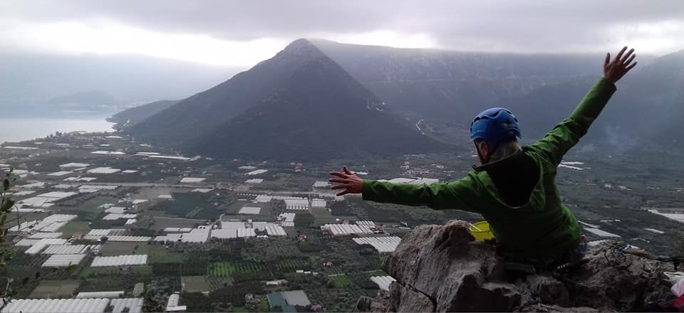

Strona ta jest jednym z narzędzi mojej nauki, powstała tylko i wyłącznie w tym celu i stanowi efekt wizualny szeregu tworzonych przeze mnie plików i kodów. Być może w przyszłości zyska formę i treść , która pozwoli mi na pokazanie jej w ramach np. szukania pracy. Obecnie jest to strona "robocza" , nie do końca jeszcze wiem , jaką treść chcę/powinnam/mogę tu ostatecznie zamieścić , więc wiele informacji obecnie tu zawartych może być zbędnych, chaotycznych, itd. , ale niestety muszę na czymś pracować i uczyć się 🙂, natomiast na lepszy pomysł zawartości stronki przyjdzie jeszcze czas ✌️.
Wstęp
Parę słów o mnie
Mam na imię Ania , rocznik '84' , mieszkam i pracuję w Białymstoku.
W 2008 roku skończyłam Politechnikę Białostocką jako mgr inż. budownictwa komunikacyjnego, czyli tzw. drogowiec.
Mam za sobą ciężkie lata pracy na budowach dróg w całej Polsce. Dość nietypowe jak na kobietę zajęcie, ale niestety na studiach nikt nie mówił co i jak będzie wyglądało w praktyce. Po 6 latach pracy w terenie i zwiedzania kraju seria przypadków sprawiła, że moje wspinanie się po szczeblach kariery w wykonawstwie robót dobiegło końca. Przyszła ówcześnie chwila refleksji i chęć zmiany. Niestety drabina została ta sama, a zmieniły się tylko szczeble i trafiłam do pracy w urzędzie związanym z moją branżą.
Po 6-ciu latach pracy w biurze dochodzę do wniosku, że trzeba zmienić drabinę. Drugi raz w moim dorosłym życiu przyszła taka sama refleksja i tym razem postanowiłam jej nie ignorować..... Więc jestem właśnie tu i teraz✌️.
| Lata | Miejscowość | Miejsce | Stanowisko | Informacje dodatkowe |
|---|---|---|---|---|
| 2003-2008 | Białystok | Politechnika Białostocka-budownictwo | student | uzyskanie dyplomu mgr inż. |
| 2008-2009 | Ostrów Wielkopolski | Wykonawstwo-budowa | inżynier budowy | |
| 2009-2010 | Wrocław | |||
| 2011-2012 | Białystok,Lublin | zdobycie uprawnień budowlanych | ||
| 2012-2013 | Kępno | kierownik robót | ||
| 2013-2014 | Ciechanów,Białystok | |||
| 2014-2021 | Białystok/Bielsk Podlaski | Biuro Inwestora | specjalista, kierownik projektów |
Jaki mam cel ?
Zamienić myśli w czyny, obrać inny kierunek w życiu, dokonać pozytywnej zmiany.
Mam
nadzieję, że nie
zabraknie mi
wytrwałości, motywacji a przede wszystkim chęci, zaś moje wrodzone talenty też okażą się przydatne i
"trafione" w temacie.
Jaki jest plan ?
Dobry 👍 i na pewno lepszy niż żaden. Najtrudniej jest zacząć, a to już mi się udało. Zapisałam się na kurs i próbuję coś działać💪.

Trochę luźniej o mnie
Dusza artysty, humanisty i inżyniera jednocześnie :) Zaczynając kurs, o programowaniu nie wiedziałam kompletnie nic, totalny laik. Umiejętności obsługi komputera i programów posiadałam w zakresie niezbędnym do życia i pracy w biurze.
Mój progress
Poniżej przedstawiam wybrane prace domowe i wizualne efekty kursu, krok po kroku....sami oceńcie postępy 🤪.
praca domowa tydzień 1
Zadanie polegało na stworzeniu w programie do tego przeznaczonym algorytmu czynności - w moim przypadku było to zrobienie jogurtu naturalnego.
praca domowa tydzień 2
Przy użyciu tzw. dev tools należało dokonać widocznych zmian na wybranej stronie internetowej oraz stworzyć pierwszą, bardzo prostą stronę internetową.
praca domowa tydzień 3
Trwał ciąg dalszy pracy ze stroną internetową. przy użyciu kolejnych, nowo poznawanych narzędzi w HTML,CSS,JS.
praca domowa tydzień 4
Ten tydzień obejmował m.in. refactoring strony zgodny z konwencją BEM , a także stworzenie prostego kalkulatora walut.